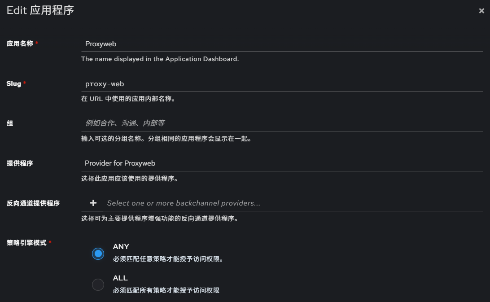
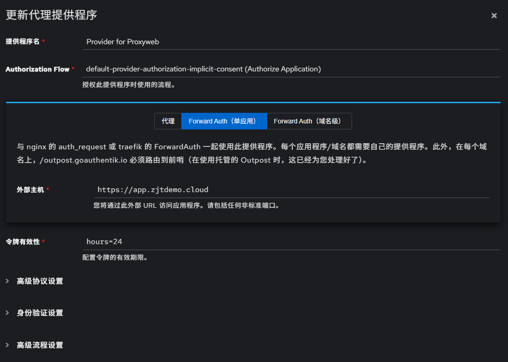
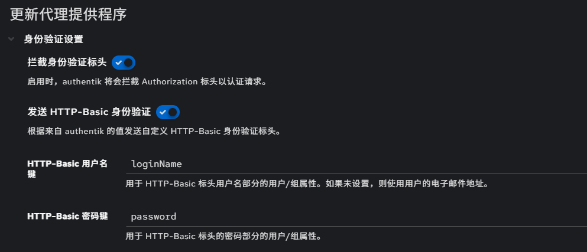
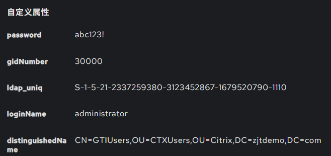
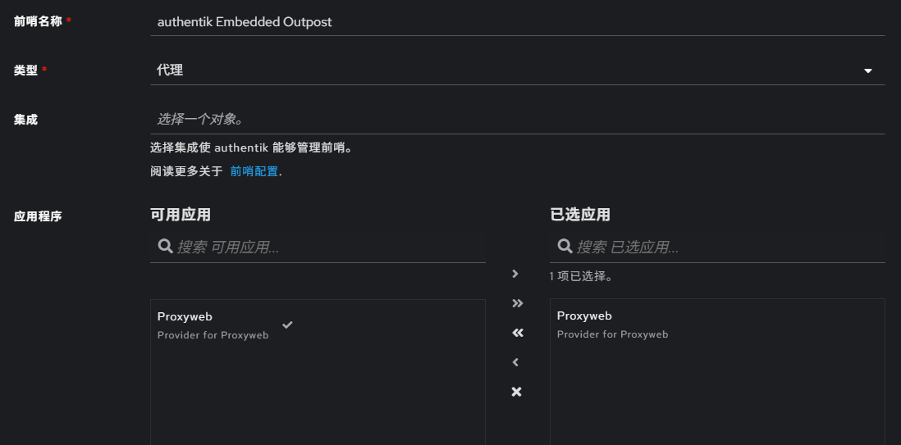
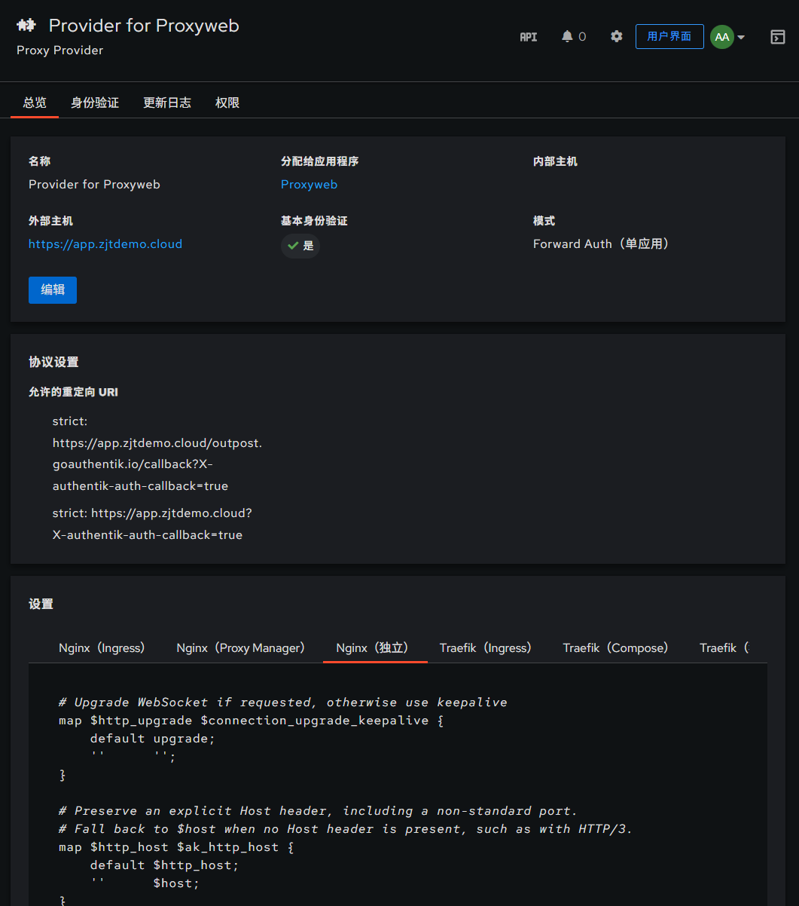
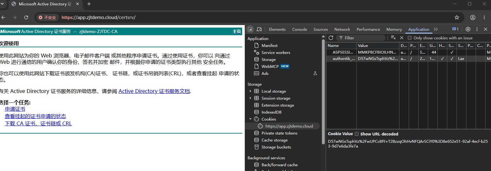
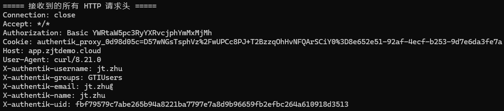

概述
本文记录用 Nginx 的 auth_request 模块对接 authentik outpost，为单个后端应用（示例为 IIS 站点 app.zjtdemo.cloud）做 Forward Auth 前置认证。浏览器访问应用时，Nginx 先向 outpost 发起鉴权子请求，通过后把 authentik 校验出的身份头（用户名、组、邮箱等）注入后端，401 时跳转到登录流程。
一、创建 proxy 应用与 Provider
- 在 authentik 中创建 Application，Slug 记为
app。 - 创建 Proxy Provider，External host 填
https://app.zjtdemo.cloud。 - 在 Provider 的「Authentication flow」中确认使用默认认证流。
- 勾选 Send HTTP Basic authentication，让 outpost 把凭据通过
Authorization头传给后端（IIS 场景需要）。
DNS 侧把 app.zjtdemo.cloud 解析到 authentik/Nginx 所在主机 192.168.3.26。




二、把应用加入 Outpost
进入 Outposts → default-authentication-outpost → Applications，把刚才创建的 proxy 应用加入 Selected Applications。只有加入后，outpost 才会为该应用匹配 Provider 并返回身份头。

三、Nginx 配置
Provider 详情页会给出官方配置样例，下面的版本针对单应用场景做了整合与注释。
1. 安装并放置共享 map
sudo apt install -y nginx
sudo cp nginx-authentik-maps.conf /etc/nginx/conf.d/authentik-maps.conf
/etc/nginx/conf.d/authentik-maps.conf 内容（必须放在 http 上下文，多个 vhost 共用，避免重复定义 map 导致 duplicate map 报错——这也是配置 reload 不生效的常见坑）：
# WebSocket 升级：非升级请求保持空值（比写死 close 更利于 keep-alive）
map $http_upgrade $connection_upgrade_keepalive {
default upgrade;
'' '';
}
# 保留显式 Host 头（含非标准端口，如 :9443）；无 Host 时回退 $host
map $http_host $ak_http_host {
default $http_host;
'' $host;
}
2. 应用 vhost
sudo cp nginx-forward-auth-single-app.conf /etc/nginx/sites-available/app.conf
sudo ln -s /etc/nginx/sites-available/app.conf /etc/nginx/sites-enabled/
app.conf 关键内容：
server {
listen 443 ssl; # 对外发布 https://app.zjtdemo.cloud
http2 on;
server_name app.zjtdemo.cloud;
ssl_certificate /etc/nginx/ssl/auth.zjtdemo.cloud/zjtdemo.cloud.pem;
ssl_certificate_key /etc/nginx/ssl/auth.zjtdemo.cloud/zjtdemo.cloud.key;
# 身份头体积较大，放大缓冲避免 502 upstream sent too big header
proxy_buffers 8 16k;
proxy_buffer_size 32k;
location / {
proxy_pass https://zjtdc.zjtdemo.com; # 需要保护的内部业务地址
proxy_set_header Host $ak_http_host;
# ---------- authentik 固定段 ----------
# 每个请求发认证子请求给 outpost（沿用当前 Host，outpost 据此匹配 Provider）
auth_request /outpost.goauthentik.io/auth/nginx;
error_page 401 = @goauthentik_proxy_signin;
# 回传会话 Cookie（漏掉会无限重定向）
auth_request_set $auth_cookie $upstream_http_set_cookie;
add_header Set-Cookie $auth_cookie;
# 把 outpost 校验出的身份头传给后端
auth_request_set $authentik_username $upstream_http_x_authentik_username;
auth_request_set $authentik_groups $upstream_http_x_authentik_groups;
auth_request_set $authentik_entitlements $upstream_http_x_authentik_entitlements;
auth_request_set $authentik_email $upstream_http_x_authentik_email;
auth_request_set $authentik_name $upstream_http_x_authentik_name;
auth_request_set $authentik_uid $upstream_http_x_authentik_uid;
proxy_set_header X-authentik-username $authentik_username;
proxy_set_header X-authentik-groups $authentik_groups;
proxy_set_header X-authentik-entitlements $authentik_entitlements;
proxy_set_header X-authentik-email $authentik_email;
proxy_set_header X-authentik-name $authentik_name;
proxy_set_header X-authentik-uid $authentik_uid;
# Provider 勾选 "Send HTTP Basic authentication" 时才启用
auth_request_set $authentik_auth $upstream_http_authorization;
proxy_set_header Authorization $authentik_auth;
}
# 登录回跳路径：必须无需认证即可访问，否则重定向循环
location /outpost.goauthentik.io {
proxy_pass http://127.0.0.1:19000/outpost.goauthentik.io;
# 单应用模式：Host 用应用域名，outpost 据此定位 Provider
proxy_set_header Host $ak_http_host;
proxy_set_header X-Original-URL $scheme://$ak_http_host$request_uri;
auth_request_set $auth_cookie $upstream_http_set_cookie;
add_header Set-Cookie $auth_cookie;
proxy_pass_request_body off;
proxy_set_header Content-Length "";
}
# 401 时跳转到登录流程；单应用模式用相对路径
location @goauthentik_proxy_signin {
internal;
add_header Set-Cookie $auth_cookie;
return 302 /outpost.goauthentik.io/start?rd=$scheme://$ak_http_host$request_uri;
}
}

应用配置后执行 sudo nginx -t && sudo systemctl reload nginx 使其生效。
四、排障：验证身份头是否传到后端
在 IIS 后端根目录（默认 C:\inetpub\wwwroot）新建 test.aspx，用于打印收到的所有请求头：
<%@ Page Language="C#" %>
<%
Response.ContentType = "text/plain; charset=utf-8";
Response.Write("===== 接收到的所有 HTTP 请求头 =====\r\n");
foreach (string key in Request.Headers.AllKeys)
{
Response.Write(key + ": " + Request.Headers[key] + "\r\n");
}
Response.Write("\r\n===== 客户端信息 =====\r\n");
Response.Write("客户端 IP: " + Request.UserHostAddress + "\r\n");
%>

带上认证会话 Cookie 请求该测试页：
curl.exe -v -k -b "authentik_proxy_0d98d05c=..." https://app.zjtdemo.cloud/test.aspx
如果响应中能看到 X-authentik-username / Authorization 等头，说明账号密码与身份信息已成功传递到后端。

常见故障速查：
| 现象 | 原因与处理 |
|---|---|
| 无限重定向 | Set-Cookie 未回传，或 /outpost.goauthentik.io 路径被误加了鉴权 |
| 502 upstream sent too big header | 身份头过大，调大 proxy_buffer_size |
duplicate map 报错 |
map 定义被重复写进多个 vhost，应抽到 conf.d 共享 |
| 后端收不到身份头 | Provider 未加入 Outpost 的 Applications 列表 |
演示视频
单应用 Forward Auth 登录流程演示
本文由 WorkBuddy AI 编辑整理。